The Island
The Island je prva mapa igre, dio base game-a i ovdje 99% igrača započinje igrat.
Ova mapa ima miks svega što ark nudi, od bioma, stvorenja, oružja, resursa i boss-eva.
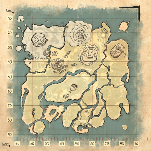
Po čemu je ova mapa posebna:
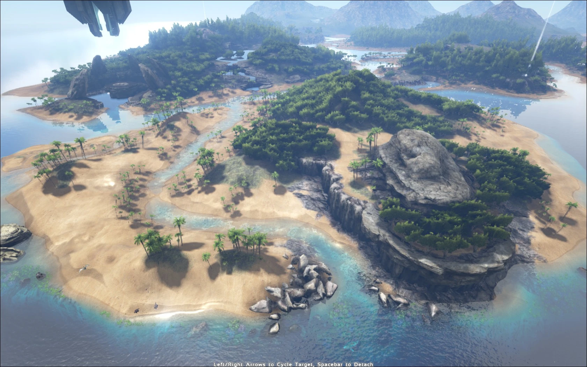
Ova mapa ima malo svega što ark nudi i s ovom mapom se može dobiti pravi "ARK experience".
Kao prva mapa, The Island nudi klasično iskusvo preživljavanja kroz raznolike biome, širok izbor dinosaura i prirodan napredak od kamenog alata do onih industrijskih
Nudi najčišće i najuravnoteženije iskustvo, vodeći vas od plaže do finalnih boss-eva.
Ova mapa nudi sve klasične biome poput đungle, plaže, močvare, planina, snijega i oceana.
Također nudi i sve klasične dinosaure poput Raptora, Trikea, Parasaura, Rexa i Spinosaura.
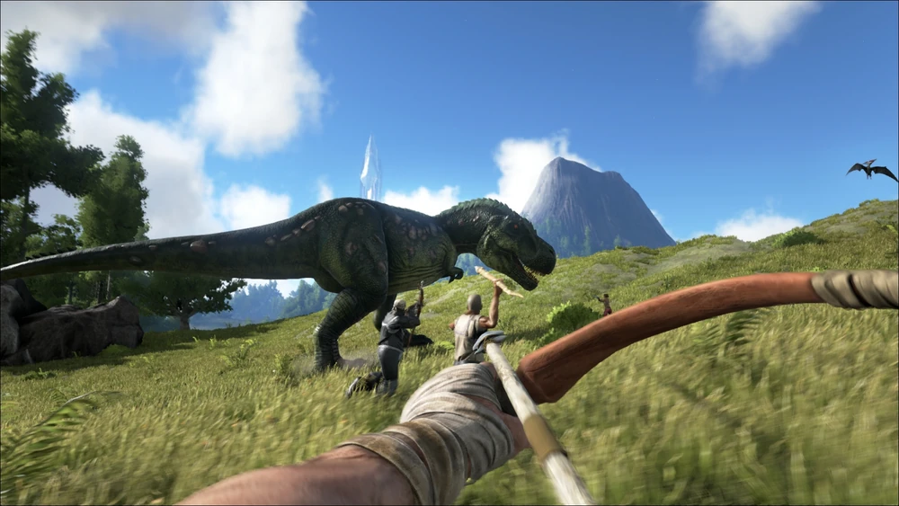
Stvorenja koja se ovdje mogu naći:
Parasaur je pasivni biljojed koji se stvara na većini otoka.
Jako je lagani za pripitomit i odličan za početak jer omogućuje lagano sakupljanje bobica.
Također ima mogućnost detektiranja opasnih dinosaura u blizini što vam može spasiti život.
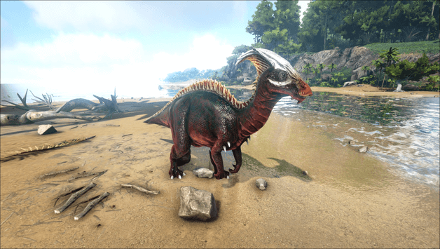
Raptor je relativno mali mesojed koji se nalazi na većini otoka.
Jako je brz i jači u čoporu, pa vam je bolje da bježite prije nego li vas uopće primjete, jer kad krenu na vas, već je gotovo ako neznate što radite.
Može biti teški za pripitomit ako niste spremni, ali kad ga imate, život vam je mnogo lakši.
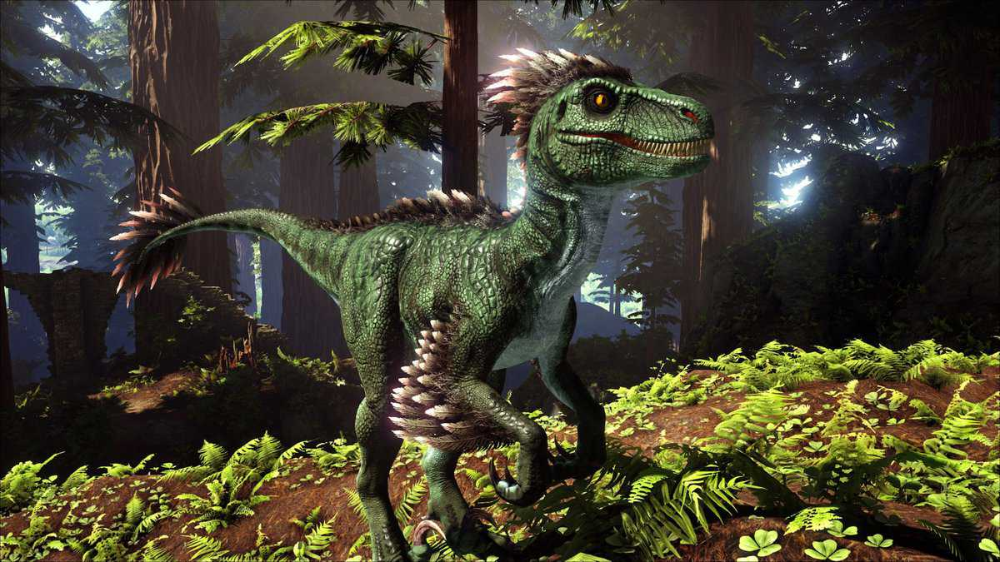
Rex je jedan od najjačih i najvećih dinosaura na ovom otoku.
Stvara se u đunglama i na planinama i šanse da preživite susret s njim su vrlo male.
Ako ga uspijete pripitomit, imat ćete jednog od najjačih dinosaura na otoku, a sa tom svojom snagom, jako su korisni u boss fight-ima
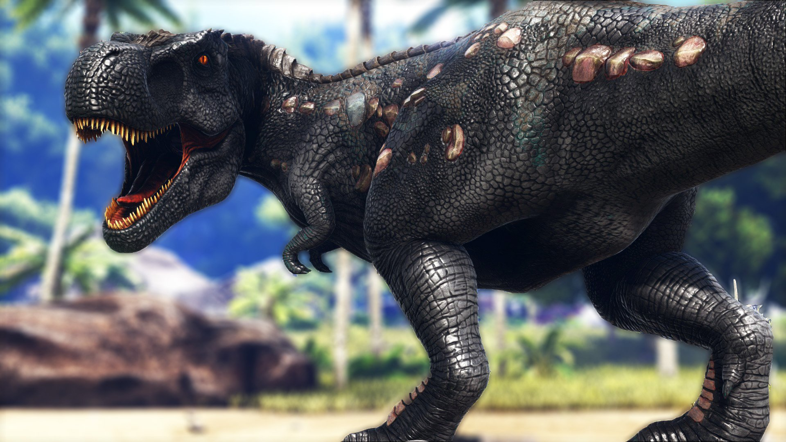
Biomi:
Beach je najsigurnije mjesto na otoku i zato ovdje započinje vaša avantura.
Na plaži nema previše opasnih dinosaura, ali to ne znači da ih uopće nema, idalje se morate paziti Dilophosaura, Raptora i Icthyornisa.
Ovdje se predlaže da napravite kamp dok niste spremni otići u opasnije djelove otoka.
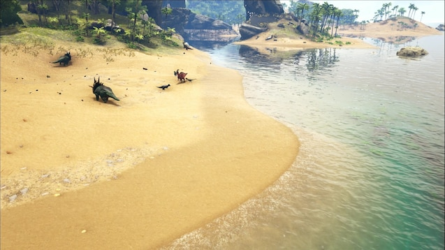
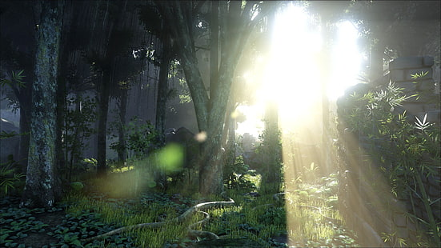
Jungle izgleda sigurno na prvu, ali ovdje se nalazi mnogo malih i brzih opasnih dinosaura.
Jedan od tih malih dinosaura je Troodon, koji su agresivni samo noću, ali tijekom te neći su toliko opasni da bez obzira koliko ste jaki, mogu vas ubiti bez problema.
Putovanje đunglom se preporućuje samo tijekom dana, a tada se mogu i naći korisni dinosauri za pripitomit.
Mountains su vrlo opasni jer ovdje prevladavaju Sabertoothovi i Argentavisi koji vas mogu ubiti u sekundama.
Mountains su prepune metala, kristala i obsidiana, koji će vam svi trebati kasnije u igri i to u velikim količinama.
Ovdje se predlaže da idete kada imate malo bolju opremu i jače dinosaure.
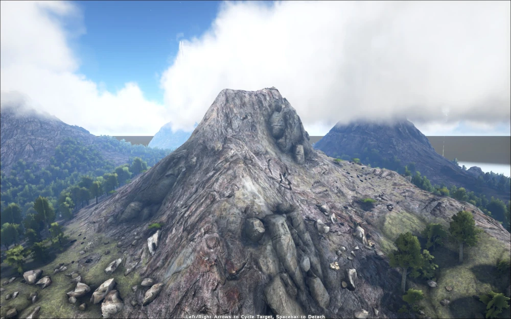
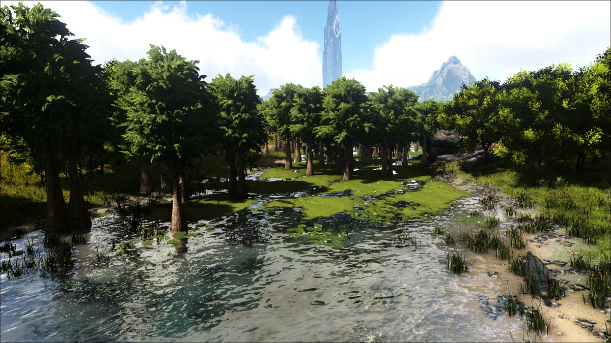
Swamp je jako opasan. Jako. Nemojte tu ići.
Nemojte.
Nemam niti što za reći. Jako opasno i ništa korisno.
Redwood je ogromna šuma visokih drveća koja se nalazi u centru otoka.
Ovdje se nalaze relativno opasne životinje, od kojih je najznačajniji Thylacoleo.
Ne predlažem da letite sa pticama ovdje, upravo radi Thyle. Upozorio sam vas.
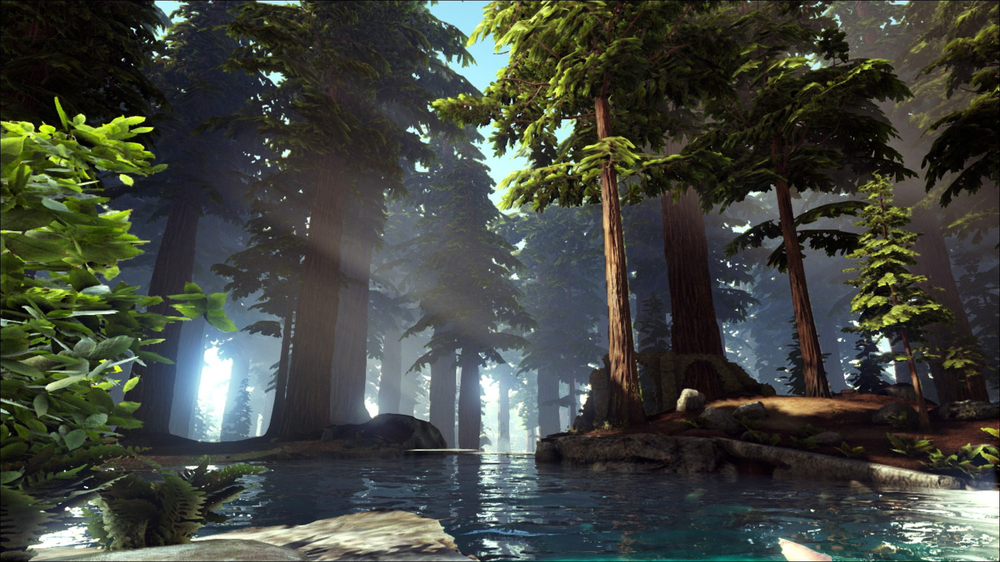
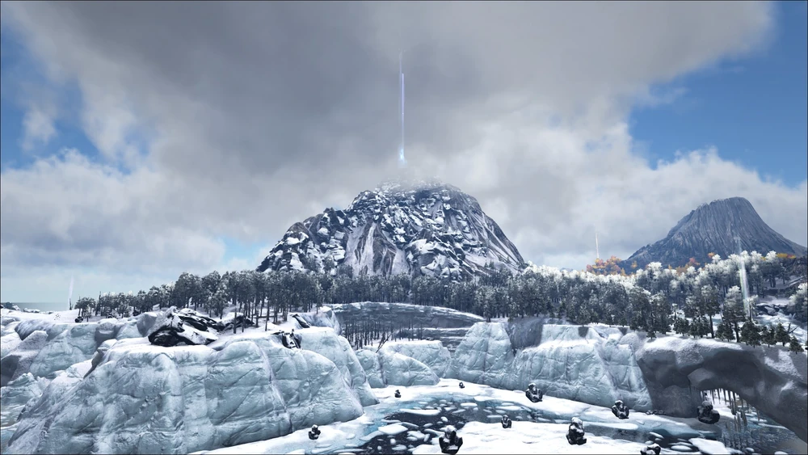
Snow se nalazi u gornjem lijevom kutu otoka i ovdje prevladavaju ekstremno niske temperature.
Ovo je glavno mijesto za nalazišta nafte, ali i zato se tu i nalaze jako opasne životinje i dinosauri poput, Dire Wolf-a i Yutyrannusa.
Ovdje nemožete preživjeti bez Fur Suita, ali da ga napravite, treba vam fur, koji se dobije od krznenih životinja...koja se ovdje nalaze...u snow biomu...gdje nemožete bez fur suita...